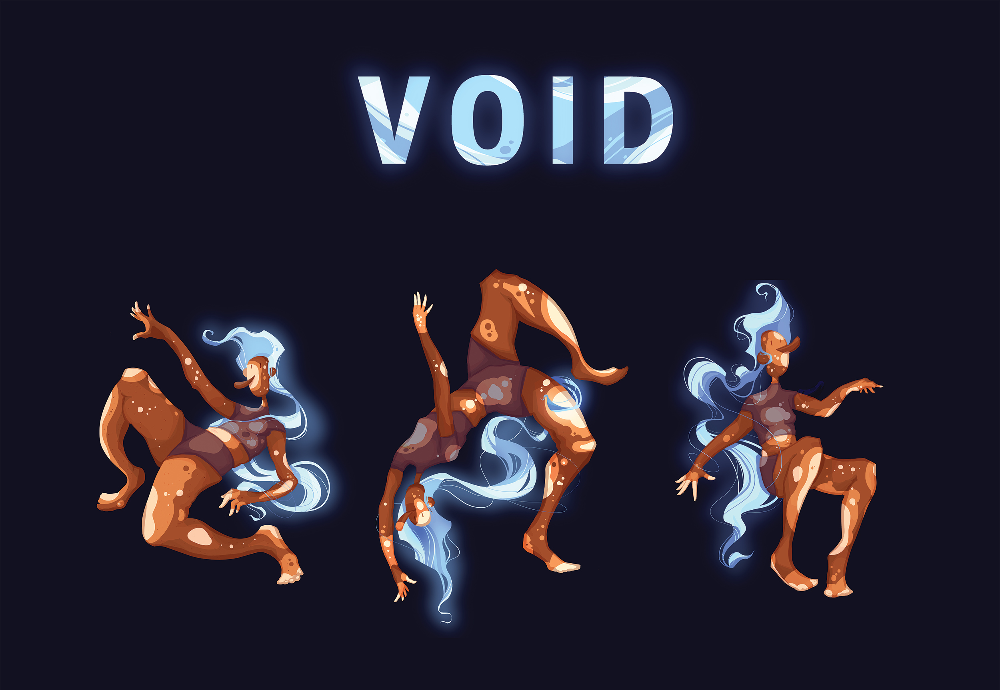
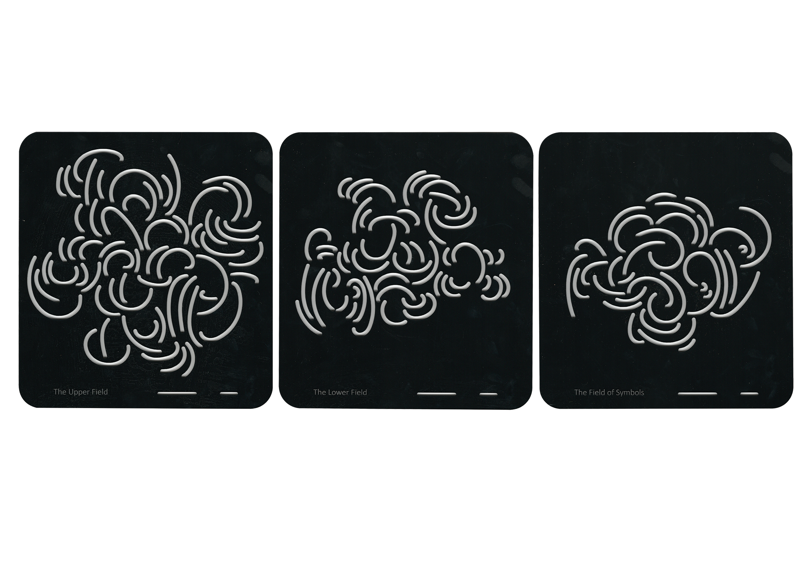

CAMPAIGN
CAMPAIGN
PUBLICATION COVERS
The outcome of the brief includes the afformentioned publication, accompanied by a wearable
component and website.
This was my final studio outcome; String explores the sense of control individuals feel they do not
have. String is a self agency campaign capturing the delicate nature of our relationship with
agency, how we can grow or become strung.
Suppervised by Matt Walker
Student Project
Student Project
.jpg)
PUBLICATION COVER
.jpg)
ACCORDIAN PUBLICATION

PUBLICATION SIDE ONE

SCARF ONE

SCARF TWO
VOID

ILLUSTRATIONS
Inspired by kenophobia these illustrations were attempting to capture a floating sensation that may
accompany the expanse of space
Suppervised by Ned Culic
Student Project
Student Project
LIFE CODE
 DNA PUZZLE
DNA PUZZLE
POSTER
This brief was an intruction based outcome: my project educated pre-teens on the nature of DNA. In
doing so the outcome was a puzzle set. Involving illustration and typography the puzzle box provided
instruction on the constructability of a simplified dna strand made from the puzzle pieces provided
Suppervised by Dion Tuckwell
Student Project
Student Project
TYPOGRAPHIC STENCIL

FIELDS OF FLOR
STENCIL PROJECT
Fields of flor is a typography stencil, and while the type face that left it may not be my best work, I find the principles and ideas behind the project to more interesting. The project looked at exploring a band of interest (flor) and translating there sound as a visible principle. The project quickly took on a mind of its own. Conclusively flor became described by the priciple of magnetism, and hence forth the field of manipulation magnetism has on its surroundings. The stencils became the fields of flor; The upper field(uppercase) the lower field(lower case) and the field of symbols (numbers and symbols).the stencils come with pamphlets describing there intent and how to use them effectively.
Fields of flor is a typography stencil, and while the type face that left it may not be my best work, I find the principles and ideas behind the project to more interesting. The project looked at exploring a band of interest (flor) and translating there sound as a visible principle. The project quickly took on a mind of its own. Conclusively flor became described by the priciple of magnetism, and hence forth the field of manipulation magnetism has on its surroundings. The stencils became the fields of flor; The upper field(uppercase) the lower field(lower case) and the field of symbols (numbers and symbols).the stencils come with pamphlets describing there intent and how to use them effectively.
Student Project